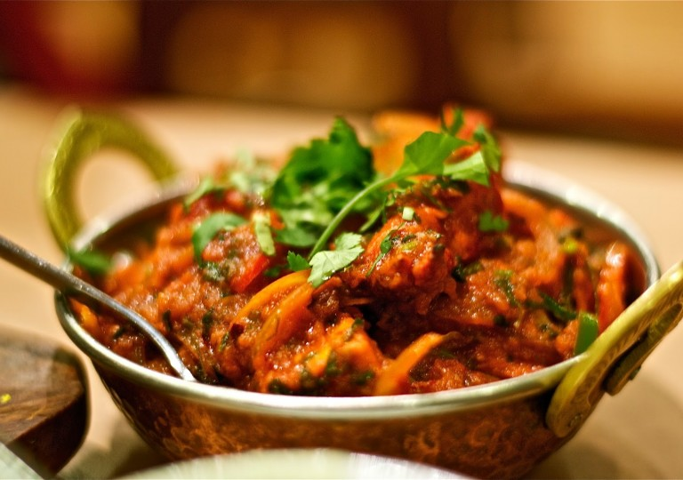

Lamb Jalfrezi

Description
Tender chunks of lamb cooked in a spicy tomato gravy then finished with a fry up of chunky onions, peppers and
tomoatoes and fresh garam masala.
Ingredients
- 400-600g lamb shoulder, trimmed and chopped
- Tomato gravy: 2 tbsp vegetable oil
- 4 chillies, chopped
- 1 tsp cumin seeds
- 4 garlic cloves, sliced
- 1 tsp salt
- 4 fresh tomatoes, chopped
- ½ tsp turmeric
- Jalfrezi Fry:½ tsp salt
- 1 tbsp vegetable oil
- 1 onion, cut into chunks
- 1 red pepper, cut into chunks
- 1 tsp cumin seeds
- 1 tomato, chopped into chunks
- 2 chillies, chopped
- 1 tsp garam masala
Method
- Heat oil in a pan, add the cumin seeds, chilli and garlic and fry until lightly browned.
- Add the chopped tomatoes, salt and turmeric then cook so the tomatoes break down to make a lovely thick gravy.
- Add the lamb and stir to coat the pieces. Reduce the heat and place the lid on the pan and leave to cook for 20-30
minutes on a low heat until it is soft and tender.
- In a separate pan heat some oil and add the cumin seeds, once fragrant stir in the chunky onions and peppers, tomato
and the chilli then stir fry. You can cook these as much or as little as you like. I prefer mine with a bit of a crunch
- Stir in the garam masala for added body and depth.
- Once the chicken is cooked and the sauce has reduced stir in the garam masala fried vegetable mix.